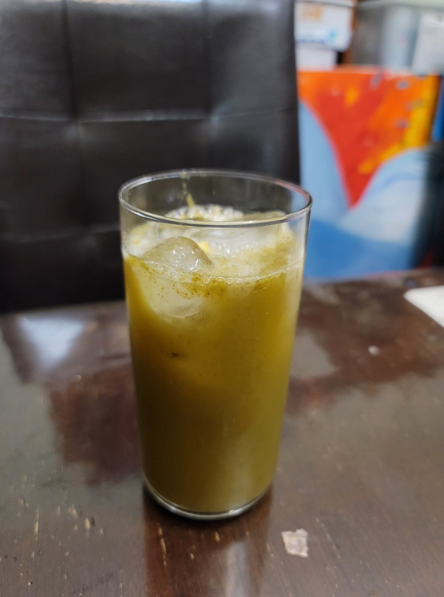

Green Goddess Kombucha

Ingredients:
- 4 cups Kombucha, after 1st fermentation
- 1/4 cup Spinach
- 1 Kiwi
- 1 tsp Moringa powder
- 1 tbsp Ginger, minced
Instructions:
- Place the spinach, kiwi, and moringa powder into a blender along with a splash of kombucha to get the blender going. Blend until smooth.
- Evenly distribute the blended mixture into 2 16 oz flip-top bottles. Then evenly distribute the ginger into each of the bottles. Fill up the remaining space in the bottles with kombucha. Let ferment for 3-7 days or until carbonated to preference. Then refrigerate and serve cold over ice.